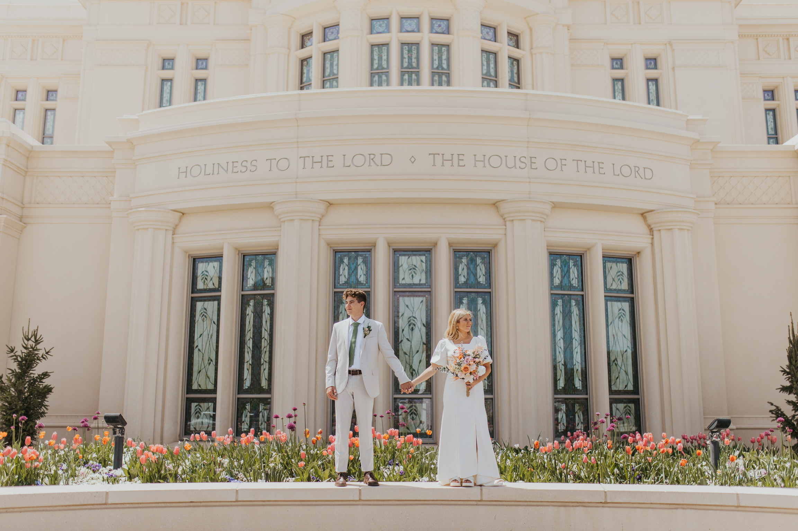
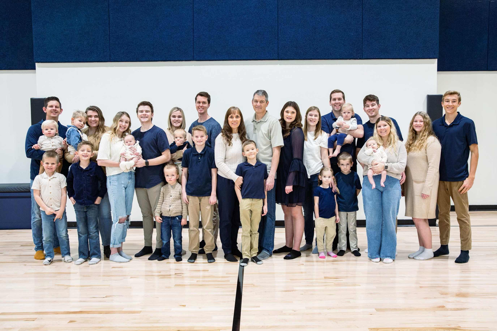
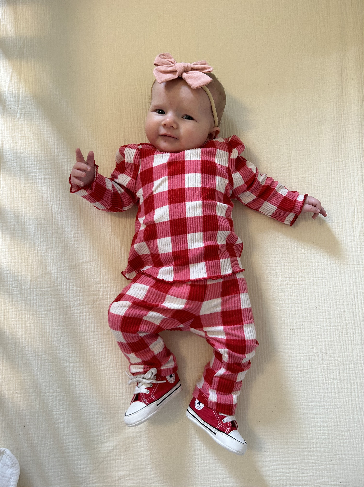

- Education
- Brigham Young University
- Aug 2022 - May 2026
- Clubs: Association for Information Systems and Global Supply Chain Association
- GPA 3.45, ACT 22
- Utah Valley University
- April 2017 - May 2022
- Associate of Arts
- Experience
- Truck Driver/Warehouse Worker
- Loaded, secured, and delivered thousands of products to customers within established
time frames.
- Navigated hundreds of newly built homes in Utah County without the use of google maps,
while contacting customers.
- Pre-planned different routes to make sure the products are shipped in an efficient
manner.
- Golf Course Technician
- Performed routine maintenance jobs, such as mowing and trimming fairways, roughs, and greens in one of the most prestigious golf courses in the Midwest.
- Operated and maintained specialized equipment such as greens and tees mower, buffalo blower, and weed trimer.
- Worked during the 2023 U.S. Amateur Championship
- Service
- The Church of Jesus Christ of Latter-day Saints
- Led up to 30 other representatives in different cities.
- Planned multiple presentations to improve the number of people investigating.
- Taught 3 other representatives how to speak Hungarian efficiently and work as an LDS
voluntary representative.
- Traveled weekly to various cities in Hungary to conduct performance evaluations and gave
help to struggling volunteers.
- Reported the well-being of all volunteers in my jurisdiction to immediate supervisors.
- Skills
- Tableau
- VBA
- SQL
- HTML
- Python
- JavaScript
- Object-Oriented Programming
- CSS Animations
- Excel
|  |
I was sealed and married to my wife on May 10, 2022. We have now been married for almost two years.
We both attend Brigham Young University. My wife is currently
in the Masters Program of Accountancy. Since being married we have flown all over the U.S.
We both plan on working full-time after school. |
| This is my entire family. Believe it or not I have nine siblings, two nieces,
and six nephews. I love them all so much. We have been living in Utah for almost 20
years now. My dad works for Nu Skin as a product manager and my mom is an aerobics
instructor at VASA. I love all of my nieces and nephews; they know me as the fun uncle
who likes to always tease and play with them. |
 |
|  |
This is my daughter Oakley. She is the cutest and most energetic three month old.
She loves to play with her teething toys and go on walks. She was born on November 6, 2023.
She is spoiled by both of her grandparents and has already been on multiple trips outside of Utah.
I love her so much and can't wait till she can start walking around and talking. |
| I served my mission in Hungary. I got the amazing expperience to serve in
Papa, Szekesfehervar, Szolnok, Gyor, and Pest! I loved everything about my mission from
all the cool architecture to teaching people about the Gospel of Jesus Christ. One of my
favorite experiences was when I got to watch Hungary play against England in the Euro
Cup. |
|